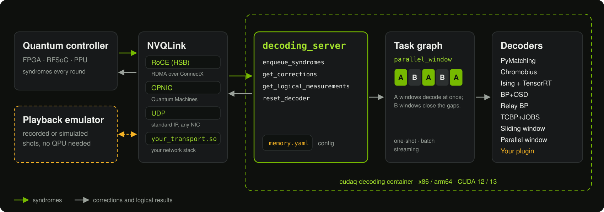
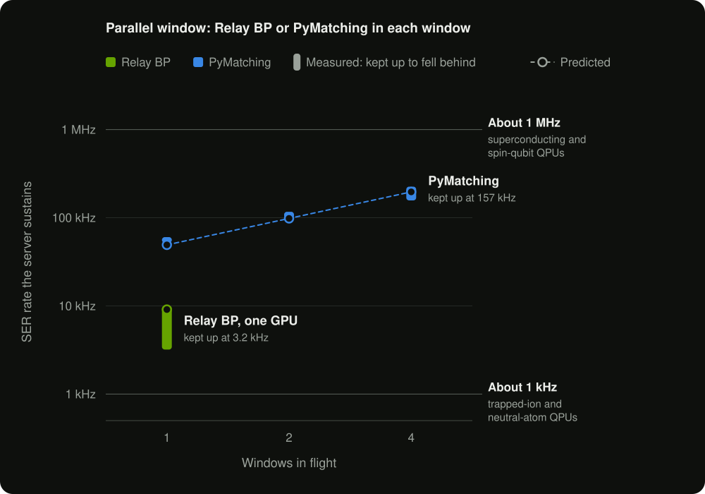
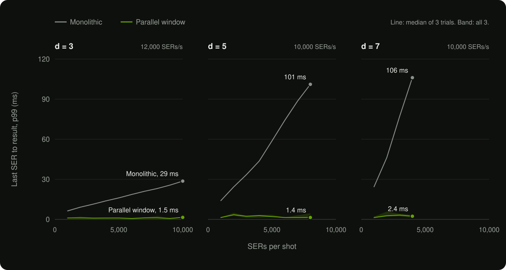

QEC decoding comes online with the CUDA-Q QEC Decoding Server
Most quantum error correction (QEC) decoding today happens offline: sample a memory experiment, decode the shots, plot a logical error rate. A fault-tolerant QPU needs decoding as an online service instead. That service runs next to the controller for the life of the machine, takes syndromes as they arrive, and answers before the next round needs the result.
Today we're releasing CUDA-Q QEC 0.9 with the CUDA-Q QEC Decoding Server: an open-source reference application for online decoding.
The Decoding Server ships in the cudaq-decoding container that anyone can download, experiment with, and deploy to a realtime host connected to a real or emulated QPU controller.
Describe your decoders in one YAML file, start the server, and get corrections back over NVQLink RoCE or plain UDP.
You can try it today with no hardware at all, by replaying recorded or simulated shots through the same server you'll later connect to your QPU.

In this post we walk through the Decoding Server and its container, the wire format a controller uses to speak to it, how to test it without a QPU, and the task graphs and block-parallel scheduling that let it keep up with long streams of QEC syndrome extraction rounds (SERs).
QEC decoding needs to be online
QEC decoding is the most demanding classical workload running within the Logical QPU. It is a single-user, real-time inference task with a deadline set by the logical clock rate of the QPU, and it runs for as long as the QPU is computing.
The QPU control system streams SERs to the decoder, and these form a queue. The SER rate depends on the QPU: about 1 kHz for trapped-ion and neutral-atom QPUs, and up to about 1 MHz for superconducting and spin-qubit QPUs.The decoder must process all of the syndrome data to keep a record of the current state of the QPU. The program reads from that record at feedforward events, such as applying a T gate, where the next operation depends on a logical measurement result.
There are three requirements for QEC decoding:
- Throughput is the rate at which SERs are retired from the queue. At each feedforward event (typically a non-Clifford gate), a throughput deficit leads to exponential growth in the SER backlog (Terhal 2015). This is critical: the decoder must keep up, or the logical instruction rate decays exponentially. This is often referred to as "the backlog problem." Riverlane, UCL and the University of Sheffield showed that parallel-window decoding can avoid the backlog problem by decoding windows of SERs in parallel, so throughput can grow with the number of independent decoders.
- Reaction time is the time the QPU spends waiting for a logical measurement result at a feedforward event. This is important because it is the inverse of the QPU's clock speed. Quantum Machines derived controller-decoder requirements by implementing Shor's algorithm with surface code, and found that the closed-loop latency must stay within tens of microseconds (Kurman et al. 2024). It is natural to count reaction time in SERs, because the logical qubits keep running SERs while they wait: tens of microseconds is tens of SERs on a 1 MHz QPU, and a few milliseconds is a few SERs on a 1 kHz QPU. Because the QPU waits on each result, decoder tail latency matters, not just the average: rare hard cases can dominate runtime even when average behavior is good.
- Accuracy is how often the decoder infers the correct logical correction. Decoding is a degenerate inference problem, and we may trade off throughput and reaction time against accuracy. This is important because accuracy contributes to the logical error rate.
Throughput and reaction time can be decoupled through pipelining and parallelism, as in a superscalar processor, where the number of instructions retired per second is not simply the inverse of the time to execute one instruction. For example, Google's below-threshold demonstration on their Willow QPU decoded a distance-5 surface code in real time at a 1.1 µs cycle time, with an average decoder latency of 63 µs (Google Quantum AI 2024), so about 57 SERs were in flight at once. How hard each requirement is depends on the SER rate. On a 1 kHz QPU, a decoder with Willow's latency would finish each SER before the next one arrived, so throughput is easy to meet and reaction time sets the pace of the logical clock. On a 1 MHz QPU, the decoder needs many SERs in flight to keep up, and reaction time still has to stay within tens of SERs. Below, we look at throughput and tail latency for block-parallel decoding through two examples: Relay BP for a 1 kHz QPU, and PyMatching for faster ones.
Introducing the CUDA-Q QEC Decoding Server
CUDA-Q QEC 0.6 put GPU-accelerated decoders inside the control loop through cudaq-realtime.
That release gave every NVQLink system a path to real-time decoding, but each user still had to write their own C++ to load decoders, manage buffers, and answer the controller.
The Decoding Server, released in CUDA-Q QEC 0.9, provides a reference implementation of that plumbing, so users can build on working code instead of reinventing it. The Decoding Server is one process, configured by one file, that speaks one documented wire format. Control-system builders implement the wire format once. QEC researchers change decoders by editing the configuration file, or plug in their own. QPU operators run the same container in the lab that they tested on a workstation.
The release ships the server as the cudaq-decoding container for x86 and arm64, with CUDA 12 and CUDA 13 variants.
The image includes the decoding_server binary, its decoder plugins, nvq++, and worked examples.
The source lives in the open-source CUDA-Q QEC repository, so you can rebuild it or extend it.
To try it out, start the container on the host that will do your decoding:
export DECODING_SERVER_IMAGE='nvcr.io/nvidia/quantum/cudaq-decoding:cu13-0.9.0'
docker pull "$DECODING_SERVER_IMAGE"
docker run -it --gpus all --network host --entrypoint bash "$DECODING_SERVER_IMAGE"
Inside the container, generate a configuration for a surface-code memory experiment and start the server:
memory-experiment-generator \
--distance=3 --rounds=26 --basis=Z --decoder=pymatching \
--error-rate=0.001 --output=memory.yaml
decoding_server --config=memory.yaml --transport=udp --port=50000 --timeout=3600
The server prints QEC_DECODING_SERVER_READY once its decoders are loaded and it is listening.
Decoders are configuration
Each decoder the server hosts is an entry in a YAML file: its type, its parity-check and observable matrices, and any decoder-specific arguments. Here is the smallest example that ships with the server:
decoders:
- id: 0
type: pymatching
block_size: 3
syndrome_size: 3
H_sparse: [0, -1, 1, -1, 2, -1]
O_sparse: [0, -1, 1, -1, 2, -1]
D_sparse: [0, -1, 1, -1, 2, -1]
decoder_custom_args:
error_rate_vec: [0.1, 0.1, 0.1]
merge_strategy: smallest_weight
In production, you won't want to write these by hand.
memory-experiment-generator builds them from a code distance, round count, basis, and error rate.
The server can also export its own JSON schema with decoding_server --export-schema, so you can validate configs in CI before they reach the lab.
The container includes PyMatching, Chromobius for color codes, the NVIDIA Ising CNN predecoder paired with PyMatching through TensorRT, and the sliding-window and parallel-window decoders, which run another decoder inside each window.
BP+OSD, Relay BP, and TCBP+JOBS all come from one GPU plugin, nv-qldpc-decoder: set the decoder's type to nv-qldpc-decoder and select the method in its decoder_custom_args. Decoders load as plugins, so you can bring your own decoder without rebuilding the server.
Implement the C++ cudaq::qec::decoder interface, register it under a name, and build it as a shared library against the SDK headers and libraries in the image.
Copy the .so into the image's decoder-plugins directory and set the decoder's type in the YAML to its registered name.
The example plugin is a starting point, and the user guide walks through the build and deployment.
A wire format any controller can speak
A controller talks to the server with four remote procedure calls. Each request is a 24-byte header followed by a tightly packed, little-endian payload. The header carries a magic number, the function ID, the payload length, a request ID, and a precision time protocol (PTP) timestamp that the server echoes back, so you can measure round trips on your own system.
| Call | What it does |
|---|---|
enqueue_syndromes |
Streams bit-packed syndromes to a decoder as rounds complete |
get_corrections |
Returns the corrections for the current shot |
get_logical_measurements |
Returns corrected logical measurement results |
reset_decoder |
Clears a decoder's state between shots |
The full byte-level layout, including function IDs and status codes, is in MESSAGE_FORMAT.md.
The transport underneath is a command-line choice.
--transport=udp gets you running over standard IP networking on any NIC.
--transport=cpu-roce uses RDMA over a ConnectX NIC with the Holoscan Sensor Bridge FPGA IP, the NVQLink network stack described in our cudaq-realtime launch post.
And if your control system has its own network stack, you can load it as a shared library with --transport=/path/to/your_transport.so, with no changes to the server.
What runs where
In this release, the server dispatches every request from the host CPU. GPU decoders such as the Ising predecoder still run on the GPU; the host thread launches them. The real-time decoding interfaces are experimental and may change between releases.
Test it before you have a QPU
You shouldn't need a physical QPU to find out whether your decoder configuration keeps up. The release includes a playback emulator that replays a timed schedule of decoder calls against a running server, over UDP or CPU RoCE, and records every response.
playback-emulator \
--config=memory.yaml --schedule=memory_schedule.txt \
--backend=udp --udp-endpoint=0:127.0.0.1:50000 --tick=1ms \
--out=memory-result.csv
The same emulator is available from Python as cudaq_qec.playback.
Because it drives the production server through the production wire format, a configuration that passes in playback is the configuration you deploy.
For timing, the streaming interleaved feed-forward latency (SIFL) demo measures how decode time per round changes as rounds arrive faster. That is the number that matters for feed-forward, and we encourage partners to report it on their own hosts. Playback and SIFL are functional and timing checks on your system; they are not a QPU feedback-latency guarantee.
Compose decoders with task graphs
A single decoder per shot is fine for a short memory experiment. A real QEC workload streams thousands of rounds, mixes decoders, and needs answers before the stream ends. CUDA-Q QEC 0.9 introduces the decoding task graph to describe that work.
A task graph wires measurements through one or more decoding nodes to outputs, in Python or YAML. The same graph runs one-shot, batched, or streaming, offline in a notebook or live inside the Decoding Server. A chunked detector error model lets one configuration expand to any number of rounds, and streaming nodes accept rounds of different widths. For decoder ensembles racing a deadline, decoders now accept a cancellation token, so the graph can stop work it no longer needs.
Block-parallel decoding
The most important node in this release is the parallel-window decoder, parallel_window.
Following Skoric et al. 2023, it splits a long stream of rounds into two interleaved families of windows.
Each A window corrects a fixed number of committed rounds, using buffer rounds of context on each side, and needs nothing from any other window.
Each B window corrects the gap between two A windows once both neighbors have handed over the corrections at its edges.
A windows can all run at once, and each B window only waits on its two neighbors. That turns one long, serial decode into many short, parallel ones, so the work to finish any round is bounded by the window size rather than by the length of the stream.
import cudaq_qec as qec
# model: a chunked detector error model (DemChunksSpec) for your experiment.
# See the full parallel-window example for how to build it.
node = qec.TaskGraphNodeConfig()
node.id = "pw"
node.kind = "parallel_window"
node.dem = model
node.node_params = {
"commit_rounds": 3,
"buffer_rounds": 3,
"gap_rounds": 9,
"output": "corrections_and_logical",
}
node.max_in_flight = 4
node.decoder_type = "pymatching"
node.params = {"merge_strategy": "smallest_weight"}
options = qec.TaskGraphOptions()
options.async_streaming = True
graph = qec.DecodingTaskGraph.from_topology([node], options=options)
The decoder inside the windows is a parameter, so you can swap pymatching for any decoder that reports the faults it finds, not only the logical observables they flip.
Keeping up with the QPU
How many windows you need in flight depends on how fast the QPU produces SERs and how long one window takes to decode.
Each A window and the B window after it retire \(n_\text{com} + n_W\) SERs between them, where \(n_\text{com}\) is commit_rounds and \(n_W\) is gap_rounds, by default the size of an A window.
Decoding that pair takes \(2\tau_W\), where \(\tau_W\) is the time to decode one window, including moving its syndromes in and its corrections out.
With \(N_\text{par}\) windows decoding at once, the server retires \(N_\text{par}(n_\text{com} + n_W)\) SERs every \(2\tau_W\).
The QPU produces one SER every \(\tau_\text{rd}\), which is 1 ms at 1 kHz and 1 µs at 1 MHz.
The decoder keeps up if it retires SERs at least as fast as they arrive, which is the condition Skoric et al. 2023 derive:
In the code above, each pair of windows retires 3 + 9 = 12 SERs, and max_in_flight sets \(N_\text{par}\).
The window decode time \(\tau_W\) depends on the decoder and the window size, not on the length of the stream.
So the SER rate the server sustains grows in proportion to the number of windows in flight, while the reaction time is still set by the last window.
It is the same arithmetic that put 57 SERs in flight on Willow, counted in windows instead of SERs.
Two examples show what this means in practice, one at each end of the SER range.
Both run the parallel-window decoder in the Decoding Server on a GB200, with an FPGA streaming SERs from a distance-13 surface-code memory experiment (Figure 2).
With commit_rounds and buffer_rounds equal to the code distance, each pair of windows retires 52 SERs.
In the first example, Relay BP runs inside each window on one GPU, and a window pair takes about 5.7 ms to decode. At 1 kHz, the condition above asks for about a tenth of a window, so one window in flight keeps up with room to spare. The server kept up at 3.2 kHz with one window and fell behind at 10 kHz, against a prediction of 9.1 kHz. That is more than three times the SER rate of a 1 kHz QPU.
In the second example, PyMatching runs inside each window on the CPU, and a window pair takes about 1.06 ms, so the server keeps up with faster QPUs by adding windows. The condition above predicts that 1, 2 and 4 windows in flight sustain about 49, 98 and 197 kHz. The server kept up at 54, 98 and 157 kHz and fell behind at 59, 117 and 225 kHz, so its limit lies between those rates. The prediction falls inside that range for 2 and 4 windows and is slightly conservative for 1.

The parallel-window decoder also bounds the reaction time. A monolithic decoder can't finish until it has decoded the whole shot, so the time from the last SER to the result grows with the length of the shot. A window decoder has only the windows in the last packet of SERs left to decode when the shot ends. Figure 3 compares Relay BP run monolithically and inside the parallel-window decoder, at distances 3, 5 and 7. It shows the 99th-percentile time from the last packet leaving the FPGA to the server acknowledging that decoding is complete, with SERs sent in packets of 200 at an average of 10 to 12 kHz. Monolithic decoding reached 29 ms for a 10,000-SER shot at d=3, and over 100 ms for 8,000 SERs at d=5 and 4,000 SERs at d=7. The parallel-window decoder stayed under 6 ms at every shot length. At 1 kHz, a millisecond is one SER, so that is the difference between waiting 30 to 100 SERs at a feedforward event and waiting a few.

Real-time decoding over NVQLink
The Decoding Server is also how CUDA-Q QEC's real-time decoding API reaches NVQLink hardware.
Memory experiments written against the API decode on an NVQLink-connected real-time host through cudaq-realtime, with Relay BP for qLDPC codes and the CNN predecoder plus matching for the surface code.
Get started
- Pull the
cudaq-decodingcontainer for your CUDA version. - Generate a configuration with
memory-experiment-generator. - Start
decoding_serverand replay shots through it with the playback emulator. - Connect your controller over CPU RoCE or UDP, or load your own transport.
The Decoding Server User Guide walks through each step, and the parallel-window example shows task graphs end to end. Tell us what you need next in GitHub issues.
Whether you are building a control system, developing decoders, or operating a QPU, the CUDA-Q QEC Decoding Server is the starting point for putting real-time decoding on the critical path of your machine.